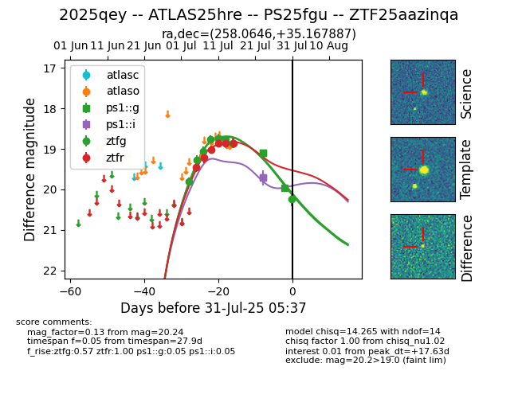

Target 2025qey at 2025-07-31 05:37, see:
FINK: fink-portal.org/2025qey
Lasair: lasair-ztf.lsst.ac.uk/objects/2025qey
ALeRCE: alerce.online/object/2025qey
TNS: wis-tns.org/object/2025qey
YSE: ziggy.ucolick.org/yse/transient_detail/2025qey
alt names
ZTF25aazinqa (ztf,fink)
2025qey (tns,yse)
ATLAS25hre (atlas)
PS25fgu (panstarrs)
coordinates:
equatorial (ra, dec) = (258.0646,+35.16789)
galactic (l, b) = (58.5777,+34.59292)
photometry
last ps1::g=19.95, ps1::i=19.71, ztfg=20.24, ztfr=18.86
3 ps1::g, 2 ps1::i, 8 ztfg, 6 ztfr detections
